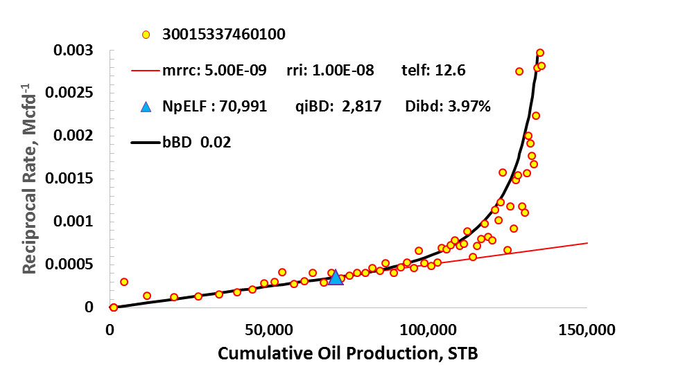
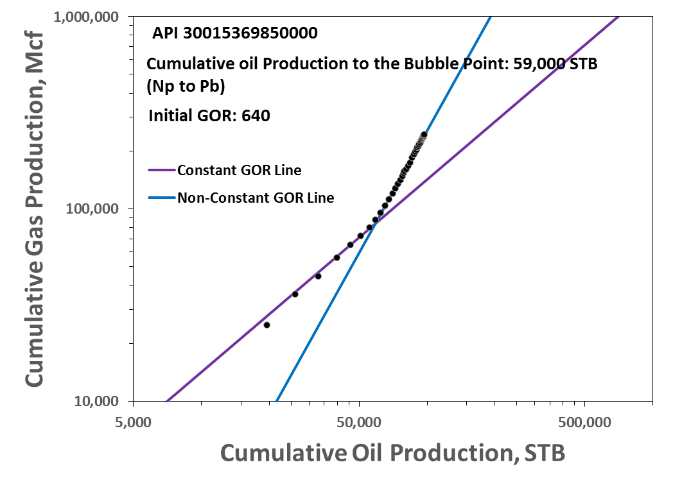

Evaluation of Economic Potential of the Delaware Basin
Situation: Evaluate a section of the Delaware
Basin in terms of economic potential and develop an aerial map
to determine sweet spots.
Task: Analyze production data and develop
a NPV/acre heat map.
Action: Determined EUR’s and drainage areas
through decline curve analysis to get NPV/acre. For wells where
there was a lack of information, stochastic estimate using
distributions was applied. Using this information from 72 wells,
an aerial map was developed.
Result: Determined profitable acreage
from the analysis. The results were validated by the drilling
trend. Group received 2nd highest grade in the class out of 24
teams.

Shows a reciprocal rate vs cumulative oil production plot.
The end of infinite acting linear flow is indicated by the
blue triangle.
×

Cumulative gas production vs. cumulative oil production
plot. Deviation from the constant GOR line indicates the
reservoir has hit the bubble point
×
Histogram distribution for drainage area
×
Log normal fit of drainage area distribution
×
Monte Carlo simulation for EUR values. P90, P50, and P10 values are shown
×
Bid value map of the a play in the Delaware Basin developed
from the stochastic analysis. Results suggest a “sweet spot”
in the northeast region of the area. The physical drilling trend
in the area agreed with our analysis!!!
×